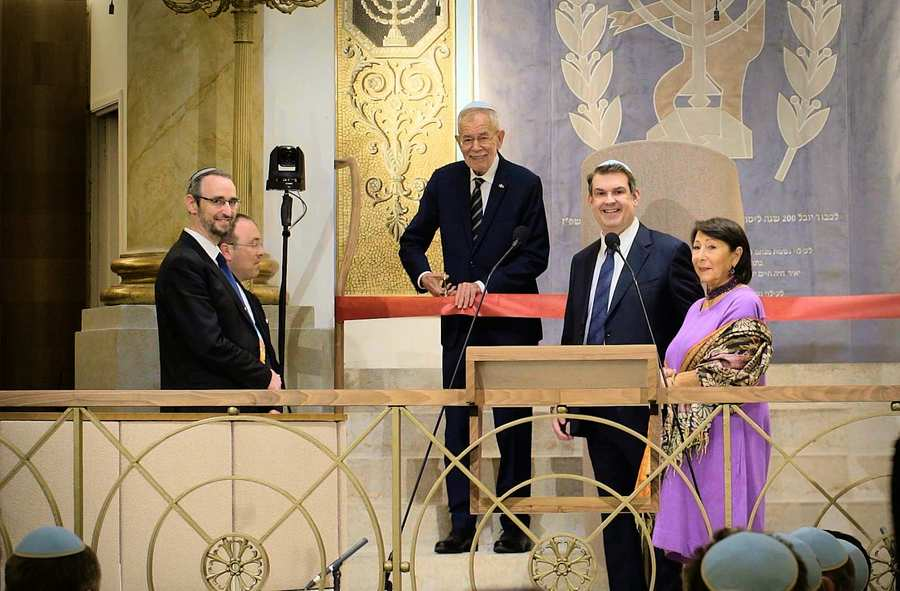

Am Mittwochabend dem 16. September ist der wiedereröffnete Wiener Stadttempel zum Schauplatz eines besonderen Festakts geworden. Vertreterinnen und Vertreter der Republik Österreich und der Stadt Wien sowie zahlreiche Gäste versammelten sich in der Seitenstettengasse, um die Wiedereröffnung des Stadttempels gemeinsam zu feiern. Zahlreiche Medienvertreterinnen und Medienvertreter begleiteten den Festakt vor Ort, während der ORF III die Feierlichkeiten live übertrug und damit die Wiedereröffnung so auch einem breiten Publikum zugänglich machte. Der Festakt bildete zugleich einen Höhepunkt im Jubiläumsjahr des Synagoge, die heuer auf 200 Jahre Geschichte zurückblickt.
Auftakt gestalteten Oberkantor Shmuel Barzilai und der Tempelchor, begleitet von Dror Binder. Ein musikalischer Beginn, der den Charakter des Abends vorwegnahm: Ein historischer Ort öffnete nach Monaten der Restaurierung und Sanierung wieder seine Tore.
Durch den Festakt führte Timna Brauer. Nach der Begrüßung durch die Moderatorin richtete IKG-Präsident Oskar Deutsch seine Worte an die Gäste und ging dabei auf den zunehmenden Antisemitismus und die besonderen Sicherheitsvorkehrungen ein, die heute notwendig sind, damit jüdisches Leben und jüdische Orte sicher gelebt und besucht werden können. Zugleich betonte er die tiefe Verbundenheit des Judentums mit Österreich: "Jüdisches Leben gab es hier schon bei uns in der Römerzeit. Jüdische Gemeinden schon seit fast 1000 Jahren. Deswegen lassen Sie mich eines festhalten, das Judentum gehört zu Österreich wie die Milch in die Melange.“

Einen sichtbaren Moment der Wiedereröffnung markierte anschließend die gemeinsame Banddurchschneidung. Bundespräsident Alexander Van der Bellen, IKG-Präsident Oskar Deutsch, Oberrabbiner Jaron Engelmayer sowie die beiden Vizepräsidenten der IKG Claudia Prutscher und Michael Galibov, setzten damit ein symbolisches Zeichen für den Neubeginn an einem Ort, der zugleich tief in der Geschichte Wiens verwurzelt ist.
Dass der Stadttempel weit mehr als ein historisches Gebäude ist, wurde auch im weiteren Verlauf des Abends deutlich. Der Blick richtete sich auf die Geschichte der Synagoge, die als einzige der einst zahlreichen Wiener Synagogen die Novemberpogrome 1938 überstanden hat und bis heute durchgehend genutzt wird.
Bundeskanzler Christian Stocker unterstrich in seiner Festrede die Bedeutung des Stadttempels und des jüdischen Lebens für die Republik Österreich: "Der Wiener Stadttempel steht seit nunmehr 200 Jahren im Herzen dieser Stadt. Seit seiner Eröffnung im Jahr 1826 ist er das spirituelle Zentrum der jüdischen Gemeinde in Wien, ein Ort des Gebets, der Begegnung und des Gemeindelebens. Seine Geschichte ist untrennbar mit der Geschichte Österreichs verbunden."
Ein besonderer Moment des Festakts war das Gebet für das Wohl des Staates Österreich und für den Frieden auf der ganzen Welt, das Oberrabbiner Engelmayer sprach. Darauf folgte Oberkantor Barzilai, begleitet von Dror Binder, mit dem Vers aus Jesaja 56,7: „…denn mein Haus soll Bethaus genannt werden für alle Völker“.
Auch Bürgermeister Michael Ludwig hob in seiner Ansprache die Bedeutung des Zusammenhalts in Wien hervor und auch, dass die Heimat dort ist wo Sicherheit herrsche. Wien zeige, dass dieses gute Miteinander funktioniert und man sich nicht auseinanderdividieren lasse. So könne auch das jüdische Leben in Wien florieren.
Zum Abschluss wurde der festliche Charakter des Abends noch einmal musikalisch aufgenommen von Oberkantor Barzilai, dem Tempelchor und dem Kinderchor. Mit diesem Akt endete der Festakt der Republik im wiedereröffneten Stadttempel.
Ein Haus mit Geschichte und Zukunft
Die Feierlichkeiten knüpften damit unmittelbar an die Wiedereröffnung des Stadttempels am 9. September an. Nach zehneinhalb Monaten Bauzeit konnte die jüdische Gemeinde ihr spirituelles Zentrum in der Seitenstettengasse rechtzeitig zu den Hohen Feiertagen wieder beziehen. Rund 450 Gemeindemitglieder hatten bereits bei der Wiedereröffnung an der feierlichen Einbringung einer neuen Tora-Rolle teilgenommen.
Bei der Restaurierung und Sanierung wurden nicht nur gebäude-, sicherheits- und brandschutztechnische Maßnahmen umgesetzt und die Barrierefreiheit verbessert. Auch die Bima und die Oberflächen des Innenraums wurden originalgetreu adaptiert. Historische Bausubstanz, darunter der Boden unter der Bima aus Budapester Marmor und historische Steinsockel, wurde wieder sichtbar gemacht. Gleichzeitig wurde die Infrastruktur des Stadttempels modernisiert und die Akustik verbessert.
Damit verbindet der wiedereröffnete Stadttempel seine historische Substanz mit den Anforderungen einer lebendigen Gemeinde. Die Gesamtkosten für die Restaurierung und Sanierung belaufen sich auf 10,5 Millionen Euro, die jeweils zu einem Drittel vom Bund, der Stadt Wien und durch private Spenden getragen werden. Rund 95 % der Gesamtkosten sind bereits aufgebracht.
Bildquelle: IKG/ROSA